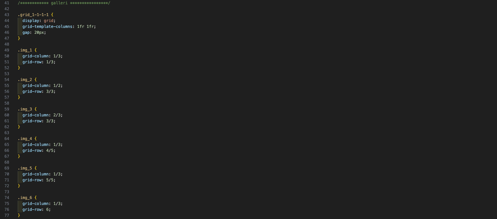

GRUNDLÆGGENDE
WEB
Temaet
Dette tema handlede om at udvikle et simpelt og responsivt website med en mobile-first tilgang. Opgaven bestod i at implementere layout og struktur baseret på udleverede wireframes og layoutdiagrammer. Den responsive struktur blev skabt ved hjælp af CSS-grid, media queries og HTML5-standarder, som vi sikrede gennem validering.
Formålet
Formålet med opgaven var at lære at skabe et brugervenligt og teknisk korrekt website, der tilpasser sig forskellige skærmstørrelser. Derudover skulle vi anvende og demonstrere forståelse for designkonventioner, semantisk HTML, og principper for responsivt design.
Proces
Jeg begyndte med at arbejde på index.html, hvor jeg anvendte semantisk HTML for at strukturere siden korrekt. CSS’en blev opdelt i to filer: én til generel styling og én til layout, hvilket fulgte "mobile-first"-tilgangen. Jeg brugte CSS Grid til at opbygge det responsive layout.
Under processen anvendte jeg browserens Developer Tools, W3C Web Validator-pluginet i VS Code samt HTML- og CSS-valideringsværktøjer. Disse værktøjer hjalp mig med debugging og sikrede, at koden overholdt standarderne. For at forhindre, at sitet blev indekseret af søgemaskiner, indsatte jeg et "noindex" tag i head-sektionen.
Læring
Dette tema har givet mig en dybere forståelse af, hvordan man skaber responsive websites ved hjælp af CSS-teknikker som grid og flexbox. Jeg lærte også om semantisk HTML og vigtigheden af en hierarkisk struktur i filer og mapper. Derudover fik jeg indsigt i, hvordan man anvender værktøjer som FileZilla til hosting. Jeg har desuden arbejdet med de praksisnære designprincipper som wireframes og layoutdiagrammer, hvilket hjalp mig med at sikre, at designet var lettere at kode og samtidig intuitivt og brugervenligt.
Refleksion
Jeg lærte, hvor vigtigt det er at sikre responsivitet på tværs af enheder. En stor udfordring var at opnå både teknisk korrekthed og et visuelt tilfredsstillende resultat. Jeg fandt, at opdeling af CSS i separate filer og brug af kommentarer hjalp med at strukturere mit arbejde og gøre processen mere effektiv. Fremadrettet vil jeg fortsætte med denne tilgang, prioritere løbende testning og fokusere på struktureret kodning for at optimere både design og udvikling.
MINCOMPUTER